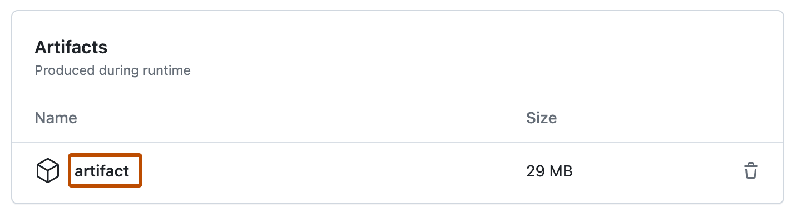

-
On GitHub, navigate to the main page of the repository.
-
Under your repository name, click Actions.

-
In the left sidebar, click the workflow you want to see.

-
From the list of workflow runs, click the name of the run to see the workflow run summary.
-
In the "Artifacts" section, click the artifact you want to download.
